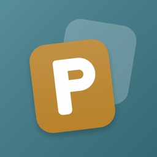

Puzzlish
Puzzlish turns English vocabulary into puzzles. Every word you find shows its definition right away, and at the end of each level you get the list of its words with their meanings.
Puzzlish ile İngilizce kelimeleri bulmaca çözerek öğren. Bulduğun her İngilizce kelimenin Türkçe anlamı hemen ekranda görünür; seviye bitince o seviyenin kelimeleri anlamlarıyla listelenir.
Puzzle modes
Bulmaca modları
- Letter Wheel — connect letters, find the words.
- Crossword — read the definition, write the word.
- Word Hunt — find the word for each definition in the letter grid.
- Card Match — pair each word with its definition from the stack.
- Daily Five — one English word a day, 6 guesses.
- Letter Mix — read the definition, put the mixed letters in order.
- Letter Guess — read the definition, guess the word letter by letter.
- Word Ladder — change one letter at a time to reach the goal word.
- Honeycomb — make words from 7 letters, always using the centre one.
- Harf Çemberi — harfleri birleştir, kelimeleri bul.
- Kare Bulmaca — Türkçe ipucunu oku, İngilizce cevabı yaz.
- Kelime Avı — listedeki Türkçe anlamın İngilizcesini harf tablosunda bul.
- Kart Eşleştirme — Türkçe ve İngilizce kartları desteden eşleştir.
- Cümle Tamamlama — İngilizce cümledeki boşluğu doldur, Türkçe çevirisi altta.
- Günlük 5 Harf — her gün bir İngilizce kelime, 6 tahmin hakkı.
- Karışık Harfler — Türkçe anlamı oku, karışık harfleri sıraya koy.
- Harf Tahmini — Türkçe anlamı oku, kelimeyi harf harf tahmin et.
- Kelime Merdiveni — her adımda bir harf değiştir, hedef kelimeye ulaş.
- Petek — 7 harften, ortadaki harfi hep kullanarak kelime üret.
Features
Özellikler
- Puzzle of the Day — a new puzzle from a different mode on the home screen every day.
- My Word Book — the words you find in every mode collect in one book with their definitions. Search by word or by meaning.
- From A2 to C2 — words go from easy to hard and from common to rare. Hundreds of levels in every mode.
- Hints — stuck? Use a hint, such as a letter or the whole word, paid with coins you earn while playing.
- Unfinished puzzles are saved. Light and dark theme. English and Turkish interface.
- Günün Bulmacası — ana ekranda her gün başka bir moddan yeni bir bulmaca.
- Kelime Defterim — bütün modlarda bulduğun kelimeler anlamlarıyla tek defterde toplanır. Kelimeyi ya da anlamını arayarak bul.
- A2'den C2'ye — kelimeler kolaydan zora, sık kullanılandan seyreğe doğru ilerler. Her modda yüzlerce seviye var.
- İpuçları — takılınca bir harf ya da kelimenin tamamı gibi ipuçları al; oyunda kazandığın jetonlarla.
- Kare Bulmaca'da istersen ipuçlarını İngilizce tanımlarıyla oku. Yarım kalan bulmaca kaydedilir. Açık ve koyu tema.
Screenshots
Ekran görüntüleri
Free to play
Ücretsiz
No lives or energy, all modes are free. Puzzlish is supported by ads; an in-app purchase removes banner and full-screen ads, while rewarded ads stay optional. Optional coin packs are available too. No account needed; your progress stays on your device.
Can/enerji yok, tüm modlar ücretsiz. Puzzlish reklamlarla destekleniyor; uygulama içi satın almayla banner ve tam ekran reklamları kaldırabilirsin, ödüllü reklamlar isteğe bağlı kalır. İstersen jeton paketi de alabilirsin. Hesap gerekmez; ilerlemen cihazında kalır.
Privacy
Gizlilik
No account, and your progress stays on your device. Ads come from Google AdMob: where the law requires it, the app asks for your consent first, and you can change your choice in Settings. Anonymous crash reports help us fix bugs and can be turned off. Details are in the privacy policy.
Hesap yok; ilerlemen cihazında kalır. Reklamlar Google AdMob'dan gelir: yasanın gerektirdiği yerlerde uygulama önce iznini sorar, seçimini Ayarlar'dan değiştirebilirsin. İsimsiz çökme raporları hataları düzeltmemize yardım eder ve kapatılabilir. Ayrıntılar gizlilik politikasında.